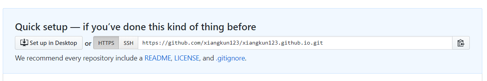

简单了解
GitHub Page 是什么
Github Page是面向用户、组织和项目开放的公共静态页面搭建托管服务，站点可以被免费托管在Github上
Hexo是什么
你可以将你的静态页面直接放在Github Page上，也可以用Hexo或者Jekyll等博客框架自动生成站点。
Hexo 是一个快速、简洁且高效的博客框架。Hexo 使用 Markdown（或其他渲染引擎）解析文章，在几秒内，即可利用靓丽的主题生成静态网页。
安装前提
安装 hexo 前必须确保你的电脑已经安装了 Node.js 和 git：
Hexo
这里我选择在我的 F 盘下创建一个 hexo 目录，以下操作默认是在 F:/hexo 下进行
安装
1 | npm install -g hexo-cli |
初始化
1 | hexo init [folder] |
folder 是你项目的文件夹，这里我的 folder 目录名为 my-blog，如果不写 folder名称，那么默认在当前文件夹初始化。
1 | cd my-blog |
生成静态文件
需要执行 generate 命令生成静态文件，才能部署到服务器
1 | hexo generate (hexo g 也可以) |
启动服务器
由于还没有配置 Github，所以我们先部署到本地服务器
1 | hexo server (hexo s 也可以) |
默认情况下，访问网址为： http://localhost:4000/
在某些情况下，你可能4000的端口被占用，可以选择重设端口
1 | hexo -p 5000 server |
这样的话地址就变成了 http://localhost:5000/
打开浏览器，输入地址你就可以看到你初始的博客啦。
目录结构
- _config.yml : 网站的配置信息，您可以在此配置大部分的参数
- package.json: 应用程序的信息。可以查看安装了那些包文件
- scaffolds: 模版文件夹。Hexo 会根据 scaffold 来建立文件
- source: 资源文件夹。是存放用户资源的地方
- themes: 主题 文件夹。Hexo 会根据主题来生成静态页面。
hexo 详细配置请查看 官网
Github Page 配置
接下来，我们来操作如何将Hexo部署到Github Page上
创建 Github 仓库
创建与你的 Github 用户名相对应的 Github Page 仓库，格式必须是 username.github.io，其中 username 必须是你的用户名，其他的都无效。
建立关联
进入你刚创建的仓库，复制仓库的地址

ssh设置比较麻烦还容易出错，这里建议新手选择 HTTPS 地址
打开 my-blog 文件夹下的 _config.yml 文件，拉倒最下面，修改 deploy 为以下代码，repository 后面的是你的仓库地址
1 | deploy: |
这里需要注意的是，Github仓库有两种连接方式：
- HTTPS：每次上传到仓库都需要输入账号密码
- SSH：不用每次上传后输入账号密码，但需要配置 SSH Key
这两者的区别：
前者可以随意克隆github上的项目，而不管是谁的；而后者则是你必须是你要克隆的项目的拥有者或管理员，且需要先添加 SSH key ，否则无法克隆。
https url 在push的时候是需要验证用户名和密码的；而 SSH 在push的时候，是不需要输入用户名的，如果配置SSH key的时候设置了密码，则需要输入密码的，反之是不需要输入密码的
这里简单介绍一下如何配置 ssh（选择 https 的可跳过）
目录下打开您的 git-bash（右键打开 git Bash Here）,接着按照下面步骤：
(1) 检查SSH keys的设置:
首先我们需要检查你电脑上现有的ssh key：
1 | cd ~/.ssh |
如果显示“No such file or directory”，跳到第三步，否则继续。
(2) 备份和移除原来的ssh key设置:
因为已经存在key文件，所以需要备份旧的数据并删除：
1 | $ ls |
(3) 生成新的SSH Key：
1 | $ ssh-keygen -t rsa -C "您的邮件地址@youremail.com" |
然后系统会要你输入加密串（Passphrase）：
1 | Enter passphrase (empty for no passphrase):<输入加密串> |
这里建议加密串也直接回车。
最后看到这样的大概界面，就成功设置ssh key了：
(4) 验证一下1
$ ssh -T git@github.com
出现如下消息，证明成功：
有时可能会报错，如下图：
把 known_hosts 文件内容修改为格式如下的内容即可
1 | github.com,警告中提示的IP地址 id_rsa.pub的内容 |
其中可以在图中看到我们的 id_rsa.pub 保存在了 /c/Users/lenovo/.ssh/id_rsa.pub 下，打开对应的目录，文本编辑器打开 id_rsa.pub 文件，复制里面的内容；
在创建的 github 项目中，选择 Settings > Deploy keys > Add deploy key，接着填上 ”title“ 和 Key (粘贴 id_rsa.pub 中的内容)，点击 ”Add key“ 完成，出现一个 key 表示成功添加，如果没有反应代表你添加失败。
部署
执行以下命令安装 hexo-deployer-git，安装完才能使用 git 部署
1 | npm install hexo-deployer-git --save |
输入以下命令部署到 Github Page
1 | hexo deploy |
接着，在 github 上打开刚才创建的目录，等待几分钟就能发现代码已经上传后，这时就可以打开你的网站站点 https://username.github.io/ 查看到页面。
之后重新部署三步
1 | hexo clean |
搭建完成
至此，独立博客就算搭建完成。
新建一篇文章
hexo new [layout] <title>
您可以在命令中指定文章的布局（layout），默认为 post，可以通过修改 _config.yml 中的 default_layout 参数来指定默认布局。更多可查看官网。
本地调试
hexo server –debug (或者 hexo s –debug)
然后就可以打开本地地址 http://localhost:4000/ 调试编写的文章了。